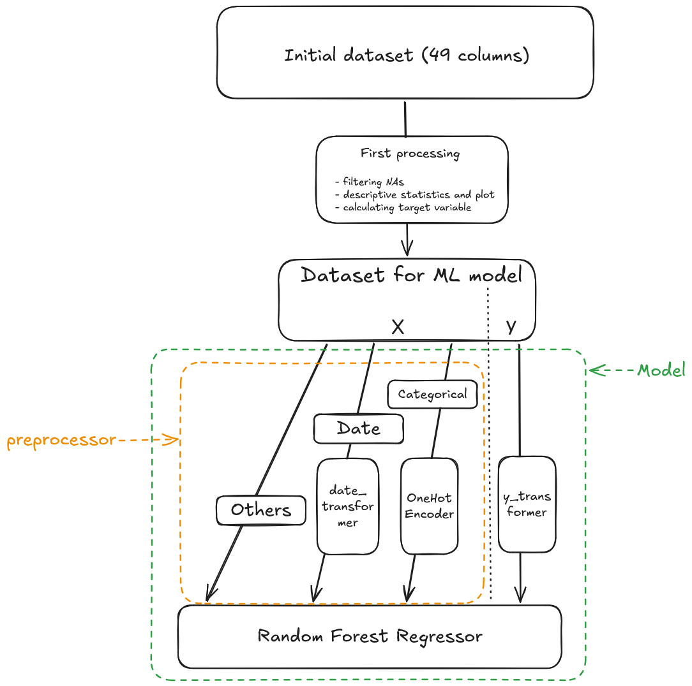

In this section, we will prepare the data to be used for training our machine learning model. Pre-processing involves a lot of steps and many go between the models, the data and the pre-processing. It also involves to have a very close look at the data to understand it before feeding it into a model. It is therefore quite normal for pre-processing to take time.
Pre-processing is built on pandas and on scikit-learn’s pipeline structures. If you want more information, don’t hesitate to go to pandas documentation and follow one of the very good online MOOC made by scikit-learn to understand the package and its way of working.
To have a better understanding of what we will do, here is an overview of the pre-processing steps we will introduce in this part.

Overview of the pre-processing
1 What are data inputs ?
NoteWatch out
All data inputs are available on the following S3 bucket : s3://projet-funathon/2026/project1/data/
You have to load the file 2026/project1/data/1_input/transactions_EN.parquet for transactions.
1.1 Exercice 1: Understanding data inputs
The aim of this part is to manipulate new database and understand features in order to prepare the preprocessing steps: it’s an important step in ML pipeline.
Initialiaze a DuckDB connection.
TipHint
First, you need to open a connection in the memory. Second, you need to create a secret table with S3 credentials
See the solution
import duckdbimport os# Create a non-persistent connection (the database exists only while the connection is alive and disappears when it is closed)con = duckdb.connect(database=":memory:")# You need to create a secret table with all the S3 credentialscon.execute(f""" CREATE SECRET secret_s3 ( TYPE S3, KEY_ID '{os.environ["AWS_ACCESS_KEY_ID"]}', SECRET '{os.environ["AWS_SECRET_ACCESS_KEY"]}', ENDPOINT '{os.environ["AWS_S3_ENDPOINT"]}', SESSION_TOKEN '{os.environ["AWS_SESSION_TOKEN"]}', REGION 'eu-west-1', URL_STYLE 'path', SCOPE 's3://projet-funathon/' ); """)RANDOM_STATE =202605
Load, with DuckDB, all data inputs in a DataFrame trans (for transactions).
See the solution
# We load all transactions made in France between 2010 and 2022trans = con.sql(""" SELECT * FROM read_parquet('s3://projet-funathon/2026/project1/data/1_input/transactions_EN.parquet') """).to_df()
NoteAnother way to load the data
DuckDB is not the only tool you can use to read from the data. You can also use pandas’ built-in read_parquet function for example.
#| code-fold: true#| code-overflow: scrollimport pandas as pd# We load all transactions made in France between 2010 and 2022trans = pd.read_parquet('s3://projet-funathon/2026/project1/data/1_input/transactions_EN.parquet')
Search some information about trans dataframe
It is important to know the quality of your data and the definition of the columns when you train a ML model (missings values, types of columns for exemple). Details about the dataset, including a dictionnary of variables, is available here.
#| code-fold: true#| code-summary: See the solution#| code-overflow: scroll#| eval: falsetrans.shape # (nb_rows, nb_columns)trans.dtypes # type of each columnstrans.columns # list of columnstrans.index # indextrans.info() # full summary: types + non-null values + memorytrans.describe() # statistics (count, mean, std, min, max, quartiles)trans.head(n=5) # first n rowsdf.isnull().sum() # nb of NaN per columndf.notnull().all() # column with no NaN?
Filter the dataframe to keep only housing transactions made inside the Paris area (the region called Île de France)
TipHint
You need to filter with the feature prop_loc_dep, with the following department codes for Paris area : [“75”, “77”, “78”, “91”, “92”, “93”, “94”, “95”]
2 Which transformations must you apply to the data ?
2.1 Exercice 2: Analyzing data inputs
We will transform a few features for the training part. It will enhance the quality of our model.
2.1.1 Analyze the expected target (variable y in ML models)
Create the final target
You need to consider what the target prediction should be. In the case of housing prices, should it be the total property price or the price per square meter? In the project, the target is normalized to represent the price per square meter, for the following reasons :
all observations have the same importance with this target : predicting price per square meter prevents size from monopolizing the variance-reduction criterion at each split, freeing the tree to capture more informative features ;
when size is no longer the dominant source of variance in the target, splits are driven by economivally meaningful features rather than a mechanical size effect ;
Feature importance scores are less distorted when size no longer absorbs a disproportionate share of variance reduction across splits ;
TipHint
You need to create a new target price_sqm with features price (housing price) and farea
For better prediction quality, you need to have a look at the distribution of your target variable and check whether it is symmetric. If the distribution is not symmetric, the prediction may be less accurate for certain range of values :
lower values when the distribution is right-skewed ;
higher values when the distribution is left-skewed ;
The reason differs depending on the model used :
For Random Forest (random forests), the final prediction is the mean value of Y across all observations contained in the leaf. Since the mean is not a robust statistic, extreme values can strongly influence the final prediction associated with that leaf.
For Gradient Boosting (gradient boosting), extreme values can lead to overfitting. Since gradient boosting iteratively reduces residuals by adding new trees, observations with very large residuals - often caused by extreme values - can have a disproportionate influence on the model.
See the solution
import numpy as npimport matplotlib.pyplot as plty = trans["price_sqm"]p = np.percentile(y, 99.5)fig, axes = plt.subplots(4, 1, figsize=(12, 15))for ax, (data, label) inzip(axes, [(y, "Y"), (y[y <= p], "Y filtered"), (np.log(y), "log(Y)"), (np.log(y[y <= p]), "log(Y) filtered")]): ax.hist(data, bins="auto", edgecolor="white", color="#334887", alpha=0.95) ax.set_title(label) ax.set_xlabel("Price per square meter") ax.set_ylabel("Number of transactions")plt.tight_layout()plt.show()
In this case, you can see the difference between Y and log(Y) distribution : it is more symmetric with log(Y) distribution.
Moreover, prices distribution is usually right skewed as they are more often positive, and prices usually present extreme values that logarithm will soften.
We will therefore apply a log transformation to the target variable when constructing the train pipeline.
Handle outlier or erroneous values in the target variable
Handling outlier or erroneous values is particularly important when you need to train a gradient boosting model. Here, you can :
delete all observations with a wrong target value ;
modify a value, if you have reliable information to support the imputation ;
apply a method to identify and filter outliers in the target variable.
The methods you chose depends on the data you have at hand, the issue you’re dealing with and your knowledge of the field.
If you want to focus your study on tails phenomena, the way you deal with this issue will be very important because you want to disentangle the richness of the extreme data from bad data. If you’re more focused on predicting the median price, the risk associated with cleaning too abruptly extreme phenomena is smaller.
In our case, one of the flaw of the data is for example partial selling (when somebody sells only a fraction of the property - leading to price per square meter too low) and error mistakes in the data (if the property for example has been renovated and extended and the reported floor area hasn’t been updated - leading to a too high price per square meter). No expert knowledge can give a threshold above which a price is for sure too high.
We will therefore apply first a deterministic method. For example, we can set a threshold when analyzing housing price distribution (see previous plots and the describe methode). If the price per square meter of the transaction exceeds €200.000 for example, the value can be considered erroneous.
In the same way, we can have a look at the lower dristribution to see if there is an issue with the left part of the distribution.
fig, axes = plt.subplots(2, 1, figsize=(12, 15))for ax, (data, label) inzip(axes, [(y[y <=2000], "Y below 2000€ per sqm"), (y[y <=500], "Y below 500€ per sqm")]): ax.hist(data, bins="auto", edgecolor="white", color="#334887", alpha=0.95) ax.set_title(label) ax.set_xlabel("Price per square meter") ax.set_ylabel("Number of transactions")plt.tight_layout()plt.show()
The graph is quite clean because the data are synthetic and cleaner than the original data. But with original data, we would have seen that the left tail gets bigger the closer we are to 0. It may indicate an issue with data around these points and the need to apply a filter for values that are too low. We will set a price ceiling of 100€ to micmic original issue, even if with the synthethic data it’s not warranted.
The second step is to apply some statistic methods. For example, we can use the Interquartile Range (IQR)to remove outlier target values.
TipHint
Interquartile Range method can keep all observations with target value between Q1-1.5*(Q9-Q1) and Q9+1.5*(Q9-Q1) .
See the solution
n0 = trans.shape[0]print(f"{n0} rows before filtering")# Apply some deterministic threshold on the dataframetrans = trans[(trans["price_sqm"] <200000) & (trans["price_sqm"] >100)]print(f"{trans.shape[0]} rows after deterministic filtering")# Apply IQR methods for the outlier removaldef outlier_transform(y, lower=0.1, upper=0.9):""" Transform Y target to log(Y) and remove outliers with IQR method Args : y : target lower: lower quantile for the IQR upper: upper quantile for the IQR """ Q_lower = np.quantile(y, lower) Q_upper = np.quantile(y, upper) IQR = Q_upper - Q_lower mask = (y >= Q_lower -1.5* IQR) & (y <= Q_upper +1.5* IQR)return maskmask = outlier_transform(trans["price_sqm"])trans = trans[mask].reset_index(drop=True)n1 = trans.shape[0]print(f"{n1} rows after deterministic and statistic filtering")
Handle missing values in the target variable
The target variable should not contain missing values when using machine learning algorithms. They should therefore be either dropped or imputed if you have reliable information to support the imputation.
For our project, we will delete all observations with a missing target value. You can see pandas documentation for help.
See the solution
trans = trans.dropna(subset ="price_sqm")
2.1.2 Preparation of the features (variables X of the ML model)
Before transforming features, you have to keep in mind two essential points when working with trees :
No need to normalize, standardize or remove extreme values from numerical features. Any transformation done with monotonic function is therefore useless (like log or square function). But a new feature defined as the quotient of two features does add information to the dataset.
No need to remove correlated features, gradient boosting and random forests are robust to multicollinearity. However, you can remove them if you want to accelerate the training phase but it isn’t an issue for this project.
2.1.2.1 Categorical features
This part is the most delicate and complex point when you use random forests and gradient boosting. Indeed, you need to transform categorical features to use them in the training phase.
Three different encoding methods exist for categorical features :
one-hot encoding : it transforms a categorical feature into a serie of binaries features, each representing one modality of the original feature. However, this method increases the dimensionality of the data : it requires more training time and memory. For example, it would create an indicator for each city code in the data to test whether the property is located in this city. At the French national level, this represents around 35.000 new variables ! Therefore, this method is not recommended for features with more than 10 modalities.
ordinal encoding : transform each modality of categorical feature into a unique integer. This method is suitable for feature with ordered modalities (age, income). Therefore, it is not recommended for features with no natural ordering.
target encoding (for CatBoost and scikit-learn algorithms): replace each modality of categorical feature with the mean of the target for this modality. Useful for categorical features with many modalities and with no natural ordering.
You have also another method (not an encoding), namely the native support for categorical feature, used in gradient boosting : the aim is to find the best split of the modalities of a categorical feature into two subset. This method has several advantages: it reduces the number of splits, produces simpler trees and increase the computational efficiency of training.
What is the list of variable that are categorical ? Which encoding should we use ? Do not write any code for now, we will do so later.
2.1.2.2 Numerical features
For tree-based ensemble methods, most preprocessing steps applied to numerical features are unnecessary. Since splits rely solely on the relative order of values, monotonic transformations (e.g. log(x), x²) and scaling (e.g. standardisation, normalisation) have no effect on the model’s behaviour.
Keep it in mind when you work on ensemble methods !
2.1.2.3 Missing values
Ensemble methods handle missing values natively, so pre-treatment is technically optional — but still advisable for safety. The key practical point is always to verify that missing values are actually coded as NaN (or whatever the implementation expects) and not disguised behind another modality, such as 0, -999, or a string placeholder, otherwise the native support won’t work as intended. Here, the number of missing value is minimal and focused on some variable. We will filter out these elements.
2.1.2.4 Time features
All datetime features must be preprocessed — you cannot use the Timestamp type as-is for training. In this project, we will handle these features as follows:
create a new feature to compute the elapsed time between a reference date and the transaction date, in order to capture the trend of transactions ;
keep months feature to capture the seasonality of transactions and convert it to numeric ;
keep years feature to capture years specifics patterns and convert it to numeric.
You will see in the section {#sec-scikit-learn-pipeline} how preprocessing can be performed with scikit-learn.
2.1.3 Now let’s go : prepare the dataframe for the training
Have a look at the list of variables available. Which ones do not bear any additionnal information and can be dropped ?
TipHint
We chose to drop the following variables : price (already taken care of with our target), prop_loc_dep (geographical information is comprised in geographical coordinates prop_loc_x and prop_loc_y), prop_loc_citycode (geographical information is comprised in geographical coordinates prop_loc_x and prop_loc_y), dist_tosea has no meaningful information in the Paris area, far from the sea.
For convenience, filter the rows containing at least one missing value. You can check pandas’s dropna function on their documentation. Check before filtering the number of rows concerned.
# Printing all rows containing at least one NAprint(df[df.isna().any(axis=1)])# Filtering NA valuesdf = df.dropna()
For convenience, we want to update the modalities of the prop_type variable : 1 means it’s a house and 2 it’s a flat. You can check pandas’s Categorical function on their documentation.
The codification of categorical variable can be computational intensive. prop_type has only two modalities but check the number of modalities of prop_year_harm. To speed-up the computation, can we regroup modalities together ? Does it make sense given how the variable has been transformed (see the presentation of the data) ? How can we do it ?
See the solution
counts = df.value_counts("prop_year_harm").reset_index()counts[counts["prop_year_harm"] <1850].describe() # there more than 500 different years of construction, going from 13th century to now. Maybe we can bundle together years before 1850 and group them by decadecounts_10 = ((df["prop_year_harm"] //10)*10).value_counts().reset_index() # 82 modalitiescounts_10[counts_10["prop_year_harm"] <1850].describe() # years before 1850 represent 64 modalities with maximal class of about two thousands operations - okcounts_10[counts_10["prop_year_harm"] <1850]["count"].sum()# Replacing year of construction by decade and merging together all years before 1850df['prop_year_harm_10'] = (df['prop_year_harm'] //10)*10df['prop_year_harm_10'] = df['prop_year_harm_10'].where(df['prop_year_harm_10'] >=1850, 1840)# Dropping old columndf = df.drop(columns=["prop_year_harm"])
Split the dataframe in train and test set.
TipHint
you can use the function train_test_split from the module sklearn.model_selection and its documentation.
See the solution
from sklearn.model_selection import train_test_split# Split features / targetX = df.drop(columns=["price_sqm"]) # X must contain only the features we'll learn fromy = df["price_sqm"] # target must be a dataframe with 1 column# Split train / test setX_train, X_test, y_train, y_test = train_test_split( X, y, test_size=0.2, random_state=RANDOM_STATE)
Now that you are familiar with the main mechanisms of pre-processing for model training, we will move on to using scikit-learn modules to prepare for training.
Scikit-learn has a very well crafted documentation, so please do not hesitate to go and have a look on their website.
NoteFall-back option
Preprocessed data have been stored in case you need a fall-back. This data includes the final X_train, X_test, y_train and y_test datasets. You can fetch it back by running the following code :
You are going to made your first scikit-learn pipeline. To begin, you can go to the scikit-learn quickstart page for an overview.
3.1.1 Step 1 : the Pipeline object
You need to create a pipeline, ie. an single object to chain multiple processing steps. First, you put your pre-processing step - all transformation you need for the data preparation - and the model you have chosen at the end. Instead of applying each step manually one after the other, the pipeline does it automatically in the right order, both during training and prediction.
For the pipeline, two constructors are available :
make_pipeline is a convenience shortcut that automatically names each step after its lowercased class name. It is ideal for quick prototyping. You can see this constructor in the quickstart page above and have more info in scikit-learn’s documentation.
Pipeline requires explicit couples ("Name to use afterwards", estimator) pairs, which pays off in production code: short, meaningful names keep parameters readable in cross validation process and improves clarity when the pipeline is logged on MLFlow. In the project, we will use Pipeline and not make_pipeline.
When you create a pipeline, the first step is to prepare your data. The object ColumnTransformer can perform that : it allows you to apply different transformations to different columns of your dataset. It takes a list of (name, transformer, columns) tuples as input and outputs a single array with all transformed columns concatenated together.
However, ColumnTransformer delete all features which are not named inside the object.
You can also check on scikit-learn documentation for the make_column_selector function. Instead of writing down all the categorical variables, you can use it to automatically detect categorical columns based on their data types.
Here is an example of scikit-learn functions used for preprocessing. We will adapt these for the current project afterwards.
from sklearn.compose import ColumnTransformer, make_column_selector as selectorfrom sklearn.preprocessing import StandardScaler, OneHotEncoderfrom sklearn.ensemble import RandomForestRegressorfrom sklearn.pipeline import Pipeline# Example of code that can be used in machine learning scriptscols_cat = selector(dtype_exclude="number") # Defines categorical features as all but non numericalcols_num = selector(dtype_include="number") # Defines numerical features as columns with data types (dtypes) numericalpreprocessor = ColumnTransformer([ ("num", StandardScaler(), cols_num), # scaling can be useful for some model but not for our project ("cat", OneHotEncoder(), ["region", "job_type", "prop_year_harm_10"]) ], remainder="passthrough"# the remainder parameter tells what to do with features not transformed. By default, non transformed data is dropped. Specifying "passthrough" passes on the data unchanged to the model.)pipeline = Pipeline([ ("preprocessor", preprocessor), ("model", RandomForestRegressor())])
3.1.3 Now let’s go : prepare the pipeline for the training
We will now create our first pipeline to transform the data for the training phase. We will first use a Random Forest model and then compare with a gradient boosting model.
transform the trans_date variable, a Timestamp feature to a elapsed feature (ref_date = '2010-01-01 00:00'). You can create a new function date_to_days, and apply it with scikit-learn’s FunctionTransformer. Note that the output of your date_to_days function should be a Python array and that .to_numpy().reshape(-1, 1) applied to a Pandas Series will transform it to the correct type ;
apply the chosen encoding method (OneHotEncoder) on categorical features.
See the solution
from sklearn.compose import ColumnTransformerfrom sklearn.preprocessing import OneHotEncoder, FunctionTransformerdef date_to_days(X: pd.Series, ref_date:pd.Timestamp):# converts a date to a difference to ref_date : diff_dt = pd.to_datetime(X) - ref_date# Extract days part from datetime object diff_dt = diff_dt.dt.days# Transform it from a Pandas series to a Numpy nd array, used by scikit learn for input diff_dt = diff_dt.to_numpy().reshape(-1, 1)return diff_dtdate_transformer = FunctionTransformer( date_to_days, kw_args={"ref_date": pd.Timestamp('2010-01-01 00:00')} )preprocessor = ColumnTransformer( transformers=[ ("cat", OneHotEncoder(handle_unknown="ignore"), ["prop_type", "prop_year_harm_10"]), # one-hot encoder on feature ("dat", date_transformer, "trans_date") # feature time since 01-01-2010 ], remainder="passthrough"# to keep features not transformed)
Create the Pipeline for training a RandomForestRegressor model. Go to the scikit-learn’s documentation on the matter to understand how it works.
TipHint
For the pipeline steps, you have to :
create a FunctionTransformer instance for the log transformation of the target with either np.log or your own defined log_transform and inverse_log_transform functions ;
create a pipeline rf_pipeline with the preprocessing step preprocessor defined above and a RandomForestRegressor model ;
Write all hyperparameters you want to use for the RandomForestRegressor instance - have a tour on the documentation ;